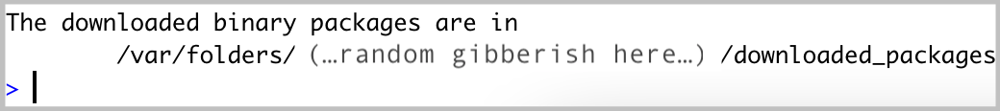

1 Installation steps for MacOS
1.1 Install or update R
To install R, visit cloud.r-project.org to download the most recent version for your operating system. The latest release is version 4.4 (Puppy Cup, released 2024-04-24).
1.2 Install or update RStudio
While R is a programming language, RStudio is a software (often referred to as an IDE, Integrated Development Environment) that provides R programmers with a neat, easy-to-use interface for coding in R. There are a number of IDEs out there, but RStudio is arguably the best and definitely most popular among R programmers.
Note: RStudio will not work without R installed, and you won’t particularly enjoy using R without having RStudio installed. Be sure to install both!
New install: To install RStudio, visit https://posit.co/download/rstudio-desktop/. Download the free (“Open Source Edition”) Desktop version for your operating system. You should install the most up-to-date version available that is supported by your operating system.
Update: If you already have RStudio and need to update: Open RStudio, and under ‘Help’ in the top menu, choose ‘Check for updates.’ If you have the most recent release, it will return ‘No update available. You are running the most recent version of RStudio.’ Otherwise, you should follow the instructions to install an updated version.
Open RStudio (logo you’ll click on shown below): If upon opening RStudio you are prompted to install Command Line Tools, do it.
Note: you may need to install command line tools and XQuartz.
- To install command line tools (if you’re not automatically prompted), run in the Terminal tab in RStudio:
xcode-select --install - Visit xquartz.org to download & install XQuartz
- To install command line tools (if you’re not automatically prompted), run in the Terminal tab in RStudio:
1.3 Install Quarto
Quarto is a scientific publishing tool built on Pandoc that allows R, Python, Julia, and ObservableJS users to create dynamic documents, websites, books and more.
Quarto is now included with RStudio v2022.07.1+ so no need for a separate download/install if you have the latest version of RStudio! You can find all releases (current, pre, and older releases) on the Quarto website download page, should you want/need to reference them.
1.4 Check for git
You should already have git on your device, but let’s check for it anyway.
Open RStudio
In the Terminal, run the following command:
which git- If after running that you get something that looks like a file path to git on your computer, then you have git installed. For example, that might return something like this (or it could differ a bit):
/usr/local/bin/git. If you instead get no response at all, you should download & install git from here: git-scm.com/downloads
An aside: Is it ncesary to have Git installed in your machine for this workshop. GitHub’s Git Guides are a really wonderful resource to start learning about this topic.
1.5 Install R packages
- Install the
usethisandgitcredspackages in R by running the following in the RStudio Console:
install.packages(“usethis”)
install.packages("gitcreds")A lot of scary looking red text will show up while this is installing - don’t panic. If you get to the end and see something like below (with no error) it’s installed successfully.

1.6 Create a GitHub account
- If you don’t already have a GitHub account, go to github.com and create one. Here are helpful considerations for choosing a username: happygitwithr.com/github-acct.html.
Once you’ve completed these steps you are ready for our workshop on Git and Github
2 Installation steps for Windows
2.1 Install or update R
To install R, visit cloud.r-project.org to download the most recent version for your operating system. The latest release is version 4.3.2 ( released 2023-10-31).
2.2 Install or update RStudio
While R is a programming language, RStudio is a software (often referred to as an IDE, Integrated Development Environment) that provides R programmers with a neat, easy-to-use interface for coding in R. There are a number of IDEs out there, but RStudio is arguably the best and definitely most popular among R programmers.
Note: RStudio will not work without R installed, and you won’t particularly enjoy using R without having RStudio installed. Be sure to install both!
New install: To install RStudio, visit https://posit.co/download/rstudio-desktop/. Download the free (“Open Source Edition”) Desktop version for your operating system. You should install the most up-to-date version available that is supported by your operating system.
Update: If you already have RStudio and need to update: Open RStudio, and under ‘Help’ in the top menu, choose ‘Check for updates.’ If you have the most recent release, it will return ‘No update available. You are running the most recent version of RStudio.’ Otherwise, you should follow the instructions to install an updated version.
Open RStudio (logo you’ll click on shown below): If upon opening RStudio you are prompted to install Command Line Tools, do it.
2.3 Install Quarto
Quarto is a scientific publishing tool built on Pandoc that allows R, Python, Julia, and ObservableJS users to create dynamic documents, websites, books and more.
Quarto is now included with RStudio v2022.07.1+ so no need for a separate download/install if you have the latest version of RStudio! You can find all releases (current, pre, and older releases) on the Quarto website download page, should you want/need to reference them.
2.4 Check for git
You should already have git on your device, but let’s check for it anyway.
Open RStudio
In the Terminal, run the following command:
where git- If after running that you get something that looks like a file path to git on your computer, then you have git installed. For example, that might return something like this (or it could differ a bit):
/usr/local/bin/git. If you instead get no response at all or something along the lines “git is not installed”, you should download & install git from here: https://gitforwindows.org/.
Once you have download and installed Git, restart your computer. Then open RStudio and again run:
where gitIf you still get a message saying something like “git is not installed”, check out the Troubleshooting section below.
An aside: Is it necessary to have Git installed in your machine for this workshop. GitHub’s Git Guides are a really wonderful resource to start learning about this topic.
2.5 Install R packages
- Install the
usethisandgitcredspackages in R by running the following in the RStudio Console:
install.packages("usethis")
install.packages("gitcreds")A lot of scary looking red text will show up while this is installing - don’t panic. If you get to the end and see something like below (with no error) it’s installed successfully.
2.6 Create a GitHub account
- If you don’t already have a GitHub account, go to github.com and create one. Here are helpful considerations for choosing a username: happygitwithr.com/github-acct.html.
Once you’ve completed these steps you are ready for our workshop on Git and Github
3 Troubleshooting
WarningIssues installing Git on a Windows
If you download Git and the Git commands still not recognized by your computer, check your computer’s PATHS.
To do this, follow the instructions in this link on how to set the right PATHS.
Restart your computer and try running git --version on the terminal. You should get something like git version XX.XX (but with numbers instead of Xs).
If you see the git version printed out in your terminal, you are all set